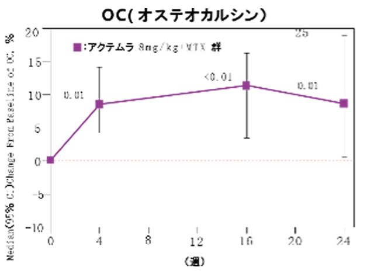
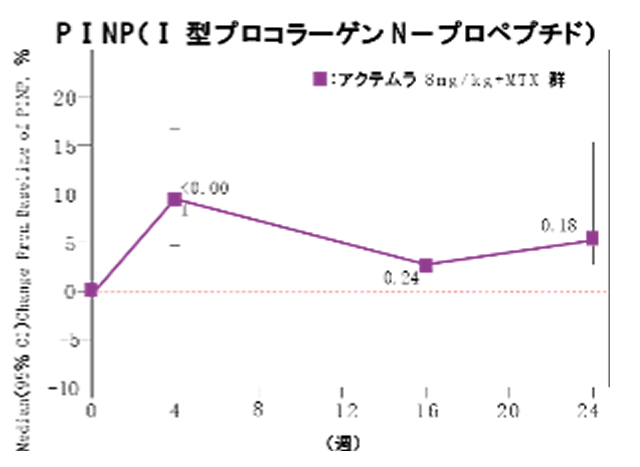
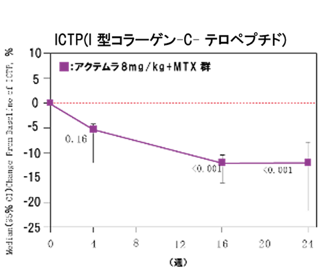
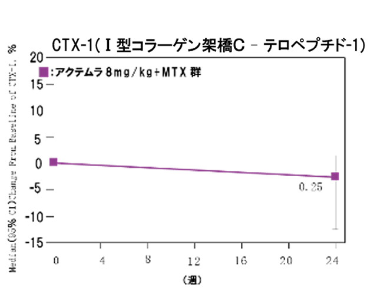

アクテムラは骨形成マーカーを上昇させ、骨吸収マーカーを減少させた（OPTION Study）
- ●アクテムラ治療後の骨形成マーカーの変化


- ●アクテムラ治療後の骨吸収マーカーの変化


Wilcoxon paired test vs. Baseline
アクテムラ投与により骨吸収は抑制され、骨形成は促進された
Garnero P, et al.: ARTHRITIS & RHEUMATISM, 2010; 62（1）: 33-43より改変